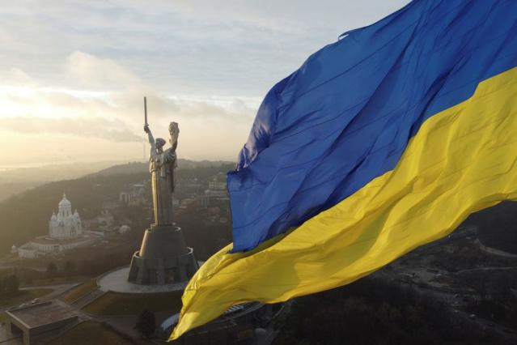
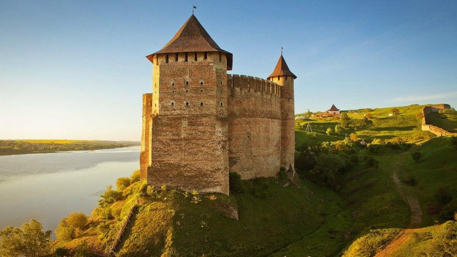

Історія України, її культура, суспільство, міста, села та природа сповнені див та приголомшливих фактів, які часом не знають і самі українці.
Клімат
Віддаленість України від океанів, континентальність Євразії та переважно рівнинний рельєф
визначають клімат країни як помірно-континентальний, що поступово змінюється із заходу на схід. Зі
збільшенням континентальності літо стає спекотнішим, зима холоднішою, а кількість опадів меншою. Такі
комфортні кліматичні умови дають людям можливість насолоджуватися пляжним відпочинком на Чорному морі
влітку і кататися на лижах на гірськолижних курортах засніжених Карпат взимку.
Найнижчі середні температури припадають на січень - лютий: -7, -8°C на північному сході країни і в
гірських районах. У березні спостерігається підвищення температури повітря. Найвищі середньодобові
температури зафіксовані в липні: +20, +25°С, а середньомісячні - +17, +19°С на півночі та північному
заході, +22, +30°С на півдні України. Розподіл опадів на території України має тенденцію до зменшення з
півночі та північного заходу на південь та південний схід.
Кухня
1. Для всіх жителів України, а також для всіх туристів відомо, що головною традиційною
стравою або “делікатесом” України, так би мовити, є сало і це правда. Цей продукт тут шанують і люблять.
Його вживають у будь-якому вигляді: свіже для смаження, солоне для вживання в їжу, як основну страву і як
закуску.
2. Борщ. Це супова страва і дуже особлива. Вважається складним у приготуванні, оскільки містить понад 20
інгредієнтів, основними з яких є капуста, буряк, картопля та кісткова юшка (бульйон). Справжній
український борщ зможе приготувати тільки український кухар, оскільки не головне знати кількість
компонентів і весь процес приготування, головне вміння - "на око" визначити наваристість бульйону,
готовність обсмажених овочів і густоту страви.
3. Хліб в українській кухні має дуже важливе значення. Зазвичай хлібини замішували із суміші пшеничного
та житнього борошна. Тісто готували на спеціальній заквасці, а випікали в українській печі. Паляниці
виходили рум'яними, ароматними, з хрусткою скоринкою. Виріб з чистого пшеничного борошна називався
паляницею і вважався святковою стравою. В інші дні пекли ячмінний хліб, а також страви з прісного тіста,
наприклад, вареники. Їх подають як основну страву або як гарнір до м'яса. Говорячи про хлібобулочні
вироби, не можна не згадати всім відомі часникові пампушки, без яких неможливо уявити борщ. На десерт
подають пісочне тісто або пиріжки.
4. Останніми, але не менш важливими в цьому списку є вареники. За принципом виготовлення процес
нагадує приготування кавказьких мантів і російських пельменів, з тією різницею, що в якості начинки
використовуються різні овочі і ягоди в будь-якому вигляді. Найчастіше в кафе і ресторанах в меню можна
зустріти вареники з картоплею і цибулею в цибулевій піджарці на вершковому маслі, вареники з сиром і
сметаною, вареники з вишнею і т.д.

Країна багата на природні, архітектурні пам'ятки, заповідники.
Замки і фортеці України
В Україні є багато історичних пам'яток, таких як замки. Сотні туристів щороку активно цікавляться замковим туризмом. Тут є середньовічні палаци та фортеці, наприклад, Старий замок у Кам'янці-Подільському, Білгород-Дністровська фортеця, Олеський та напівзруйнований Невицький замки та багато інших унікальних пам'яток архітектури. Згодом, після середньовіччя, в Україні почали зводити більш розкішні будівлі. До таких споруд відносяться: Замок генерал-майора Попова в Запорізькій області.
Природні пам'ятки України
Приголомшливі природні пам'ятки України вражають уяву, чого тільки варта так звана кам'яна
могила в Запоріжжі. Її часто називають &quo ;українським Стоунхенджем&quo ;, це стародавнє святилище під
відкритим небом. Величезні кам'яні брили висотою до 13 м з наскальними малюнками та стародавніми знаками
справляють справді заворожуюче враження. Туристи вважають, що найпопулярніші природні місця для
відпочинку знаходяться в Одесі, Карпатах та на Шацьких озерах у Волинській області.
Природні пам'ятки України вражають своєю небесною красою. Так, наприклад, на Закарпатті є діючий вулкан,
але замість лави і попелу з нього вивергається бруд. Високогірне Синерівське озеро вражає своєю
кришталево чистою водою. На Закарпатті є Долина нарцисів, а також унікальне солоне озеро Кунігунда, яке
з'явилося через просідання соляної шахти.
Вражаючі факти про культуру та історію України
Перша у світі конституція , в які окреслили права громадян та уряду, була розроблена
та
введена
в дію
у 1710 році українським гетьманом Пилипом Орликом. Для порівняння, конституція США, була
розроблена і
прийнята у 1787 році
Перша у світі конституція, в які окреслили права громадян та уряду, була розроблена та введена в
дію
у 1710 році українським гетьманом Пилипом Орликом. Для порівняння, конституція США, була
розроблена і
прийнята у 1787 році
Запорізька Січ — суспільно-політична та військово-адміністративна організація українського
козацтва, що була заснована у 1553-1554 роках, сьогодні вважається одним з перших демократичних
утворень у світі
З 12 лавр світу 4 знаходяться в Україні: це Києво-Печерська лавра (Київ, існує з 1051 року),
Почаївська лавра (Почаїв, Тернопільської області, з 1833), Свято-Успенська Святогірська лавра
Святогірськ, Донецької області (отримала статус лаври у 2004 році) та Свято-Успенська Унівська
лавра
студійського уставу (Унів з 1898).
Українські народні пісні стали підґрунтям для створення багатьох світових музичних шедеврів.
Наприклад, композиція “Summertime” Джорджа Гершвіна була написана на основі української
колискової
“Ой, ходить сон коло вікон”, яку він почув у виконанні Національного хору України під
керівництвом
Олександра Кошица.
Найстародавніша у світі мапа, вибита на кістці мамонта, а також найстародавніше поселення Homo
Sapiens знайдені в Україні, у селі Межиріччя Рівненської області. Їм 14,5-15 тисяч років.
На території України знаходиться цивілізаційна колиска світу, старша за Єгипетські піраміди та
Стоунхендж – комплекс Кам'яна могила у Запорізькій області.